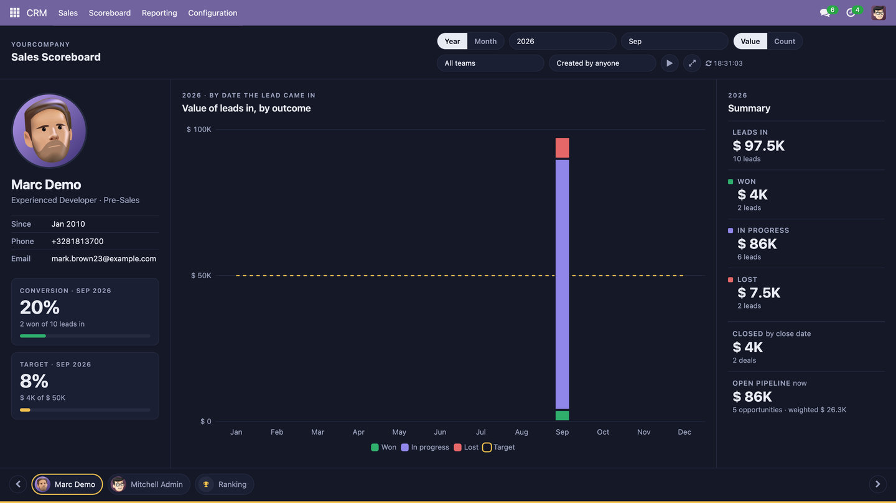
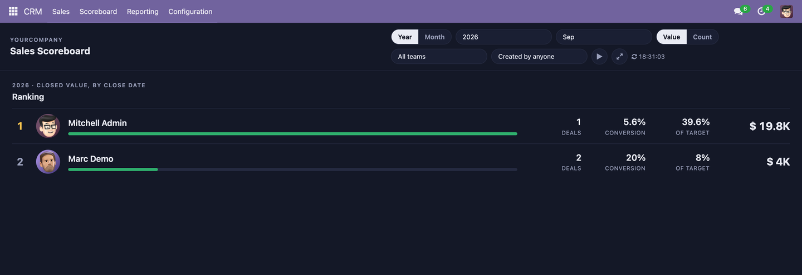

A board for the screen on the sales-room wall
One salesperson at a time — photo, name, team — with their leads for the year or the month split into won, in progress and lost, their conversion rate and target for the month, their open pipeline; then it slides to the next. The last slide is the ranking of everyone by closed value. Then it starts again. The figures refresh on their own. Every figure and every bar opens the leads behind it in CRM.

Built for a television: one theme, dark, large numerals. The three outcome colours were validated for colour-vision deficiency on this surface, and won and lost are never stacked next to each other.
Leads in, by outcomeEvery lead that came in, by the month (yearly view) or the day (monthly view) it came in, stacked as won / in progress / lost. One query, so leads in = won + in progress + lost, always. In value or in count. |
Conversion and targetWon this month over leads in this month — counting the lost ones Odoo archives, or the rate would flatter. Closed value against a monthly target you set, drawn as a line on the chart and as a meter on the card. |
Closed, pipeline, rankingClosed value by the date the deal closed — when the money became real. Open opportunities, their value, and the value weighted by probability. And everyone ranked by closed value, with deals, conversion and target. |

It runs itself
Slides to the next salesperson on a timer and fetches fresh figures on
another; both intervals are settings. Arrows to move, space to pause,
|
A user for the televisionA group of its own, Sales Scoreboard / Viewer. Give it to the user the screen logs in as, and nothing else: the board reads CRM with elevated rights, so that user needs no CRM access. Opening a list from it does. |
Filters and settingsYear, month, yearly or monthly view, value or count, sales team, and who created the lead. In CRM settings: the intervals, the monthly target, which stages count as won, who is on the board, and who the "created by" filter offers. |
Built on Odoo Community modules only, so it runs on both editions. Available for
Odoo 17.0, 18.0 and 19.0. It depends on crm, sale_crm and
hr, adds no model and no table, and draws with Odoo's own Chart.js bundle
— nothing is fetched from the internet.